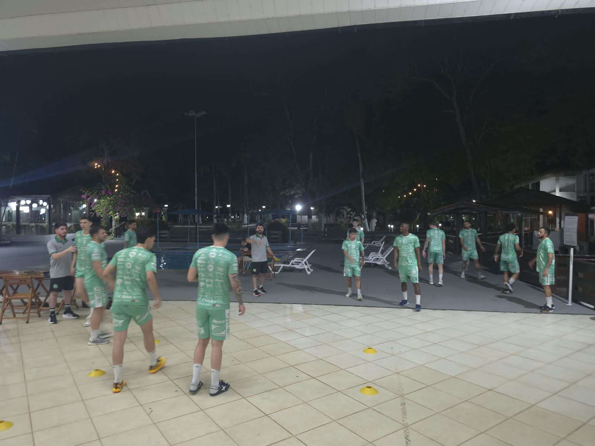

A Prefeitura de Chapecó/Chapecoense/Unochapecó tem um jogo histórico neste sábado (5/9). Às 10h, o Verdão das Quadras entra em ação no hemisfério norte, pela sexta rodada do Campeonato Brasileiro de Futsal. O duelo será diante do São José, em Macapá (AP).
A curiosidade desta partida é o fato de o ginásio do IFAP ficar acima da linha do Equador, que cruza a capital amapaense. A delegação da Chape Futsal chegou ao destino final por volta das 14h desta sexta-feira (4/9), após 28 horas de viagem - iniciada na manhã de quinta (3) em Chapecó - e quatro conexões, em Guarulhos-SP, Rio de Janeiro-RJ (onde pernoitou), Belo Horizonte-MG e Belém-PA.

O time do técnico Leo Schroeder está em quinto lugar com 9 pontos, mas pode fechar a rodada em segundo. Para isso, precisa vencer longe de casa o São José, que ocupa a nona posição (penúltima) com três pontos. A primeira fase é disputada em turno único e classifica os oito primeiros colocados ao mata-mata. O fixo Nogueira e o ala Douglinhas, com lesões musculares na coxa direita, são desfalques da Chapecoense.
Crédito das fotos: Chape Futsal